Kartoffel Music
Do you have MP3 music files that you want to keep forever? Upload them to your cloud and enjoy them on your phone! With Kartoffel Music, you can listen to your favorite tracks anytime, anywhere, without needing an active internet connection.
How to Use
1. Connect to your cloud storage and download your music
Tap to connect
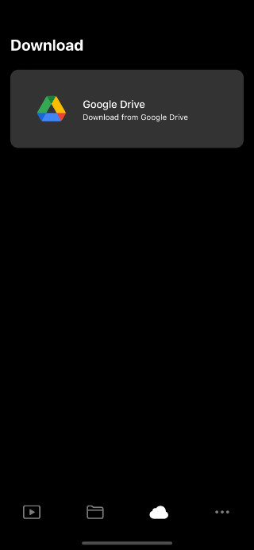
Select files
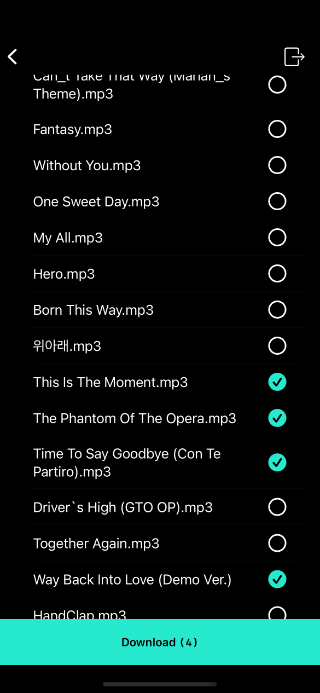
Download
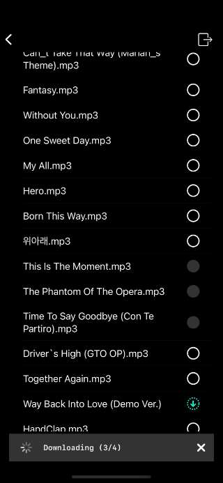
Done
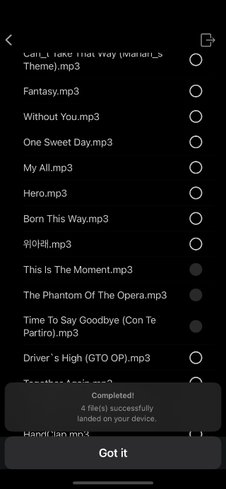
2. Check your downloaded tracks locally
Explore folder tab
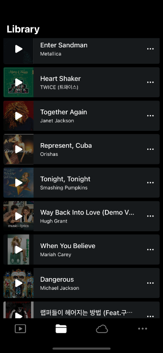
Tap to play
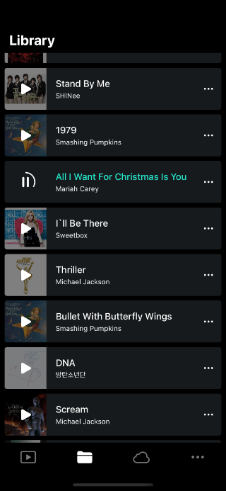
3. Create custom playlists
Name playlist
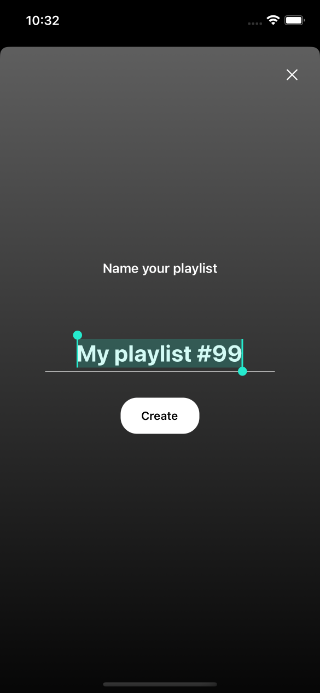
Tap "+" to add
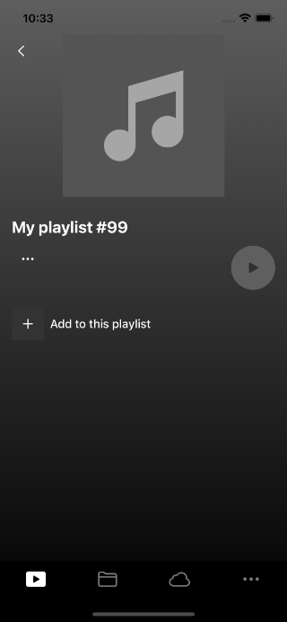
Select files
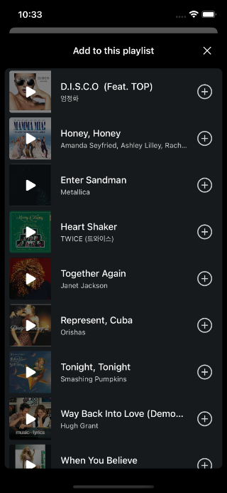
Tap play button
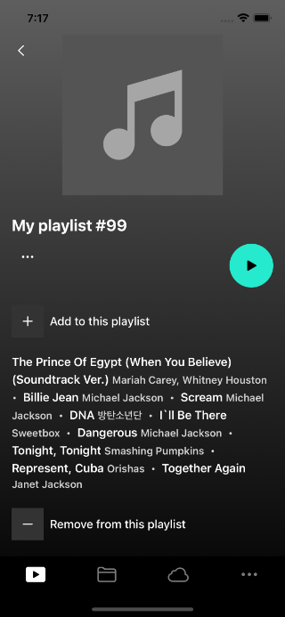
4. Enjoy pure offline listening
Now playing
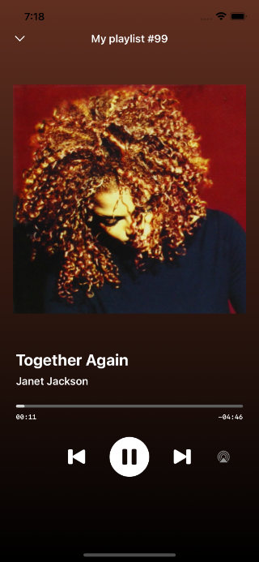
Video Demonstration
Frequently Asked Questions
Q. I have a collection of MP3 files on my computer. How do I transfer them to Kartoffel Music?
Google Drive is a great, secure place to store your private audio files. Simply upload your MP3s to your Google Drive, open Kartoffel Music on your device, and connect your Google Drive to sync and download them directly for offline playback.
Q. Do you support other cloud storage providers (e.g. Dropbox, OneDrive)?
Currently, Google Drive is the primary supported cloud provider. We are actively working toward supporting additional cloud backends including Dropbox and Microsoft OneDrive.